El ser humano usamos palabras para representar textos, el sistema decimal para los números, dibujos para las imágenes..
Sin embargo, el ordenador es una máquina digital que sólo es capaz de representar la información utilizando el sistema binario en el que solo existe el «0» y el «1».
Por tanto, cuando circula corriente por una celda de memoria de un ordenador, se representa mediante un «1» y si no circula corriente por dicha celda, se representa mediante un «0».
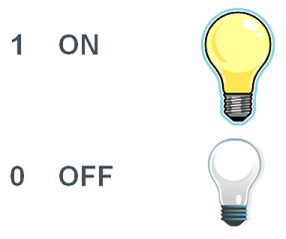
ON / OFF
Esto obliga a que, para poder almacenar información en un ordenador, previamente haya que codificarla en forma de números binarios. A este proceso se le llama digitalización.
Los estándares de codificación son reglas que definen cómo se representa la información en sistemas digitales.
El problema surgió por la falta de estandarización, la letra A se podía codificar de distinto modo en diferentes ordenadores y así nos encontrábamos con un problema al querer pasar datos de un ordenador a otro. Para intentar que todo el hardware y software codificara los caracteres igual aparecieron varios estándares:
Cada vez que pulsamos una tecla del ordenador, un circuito electrónico del teclado se encarga de traducir el carácter pulsado en un número binario.
Existe una tabla llamada código ASCII (American Standard Code for Information Interchange – Código Estándar estadounidense para el Intercambio de Información) que representa el número binario correspondiente a cada carácter.Podéis consultar aquí un listado completo del sistema ASCII extendido, con el código numérico asociado a cada símbolo.
De la misma forma, el ordenador transforma el código ASCII en caracteres para representarlos en la pantalla.
Las imágenes digitales están formadas por miles de pixeles. Cada pixel es un cuadrado de un determinado color y nivel de brillo. El ordenador guarda en binario el numero de orden, del color y brillo de cada pixel.
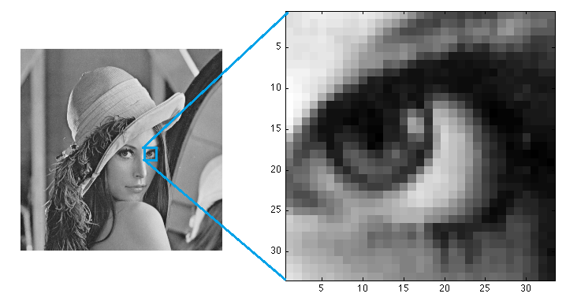
Ejemplo imagen
Cuantos más píxeles tenga una imagen, más resolución tiene (Se verá mejor).
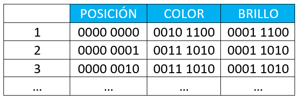
Ejemplo imagen
De la misma forma, el monitor transforma el código binario de cada pixel en un puntito en la pantalla del color y brillo adecuado.
Un vídeo digital no es más que una serie de imágenes digitales que se muestran a gran velocidad, lo que hace que parezca que estamos viendo una imagen en movimiento. Por lo tanto, un vídeo se digitaliza de igual forma que las imágenes.
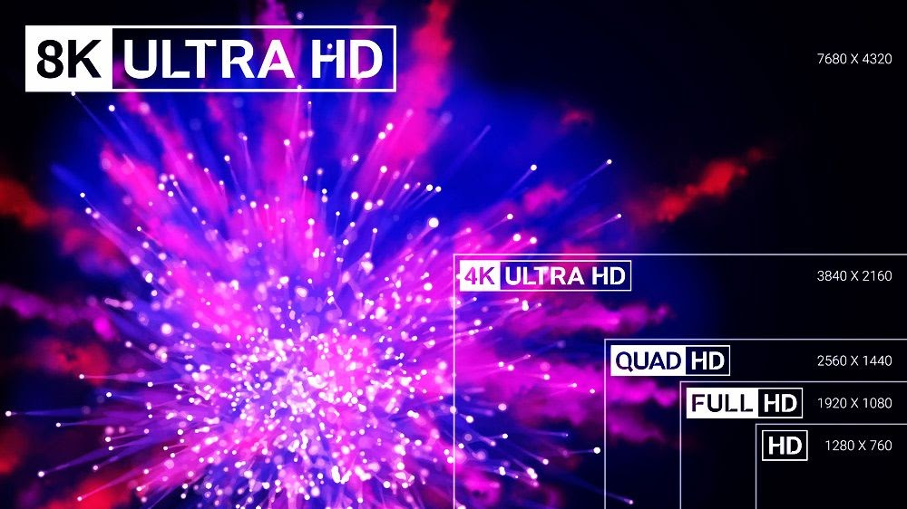
Ejemplo estándares de vídeo SD, HD, Full HD, 4k
Los vídeos ocupan mucho espacio en memoria, ya que tienen que guardar muchas imágenes. Cuanta más resolución tenga un vídeo, más espacio ocupará en memoria.
Los sonidos son ondas que se propagan por el aire desde la fuente hasta nuestros oídos. Un ordenador puede recibir esa onda a través de un micrófono y transformarla mediante una tarjeta de sonido en niveles de sonido. Luego, se traduce cada nivel de sonido en un número binario, que se guarda en la memoria del ordenador.
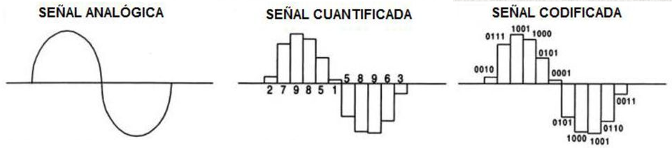
Señales audio
De igual forma, la tarjeta de sonido convierte los datos digitales en sonido que reproduce mediante el altavoz o la salida de auriculares.
A la hora de trabajar con los ordenadores, normalmente los usuarios vamos a introducir los números en decimal ejemplo 51, sin embargo ya hemos dicho que los ordenadores sólo entienden binario 00110101 por tanto, para que haya una correcta comunicación el ordenador va a tener que convertir de decimal a binario las entradas del usuario, y de binario a decimal las salidas.
El mecanismo que permite trasladar la información tal como nosotros la manejamos a como la puede manejar un ordenador, y viceversa, se denomina codificación de la información.
Las clases de codificación de datos más utilizadas son:
Sistema decimal
Se utilizan diez símbolos (0, 1, 2, 3, 4, 5, 6, 7, 8 y 9) y el valor de cada símbolo está asociado a una potencia de 10, de forma que podemos expresar cualquier cantidad como una suma de potencias de 10.
Se utilizan los dígitos 0 y 1, de forma que cualquier valor será expresado con una cadena de ceros y unos. Para representar cualquier número, el valor de cada posición es el de una potencia de base 2 (igual que en decimal pero, en lugar de tomar base 10, tomando base 2).
Se utilizan 16 símbolos distintos. Los diez primeros son los dígitos del 0 al 9, y los seis restantes son las seis primeras letras del abecedario, de forma que A = 10, B = 11, C = 12, D = 13,E = 14 y F =15.
Denominamos conversión al proceso de transformación o cambio, que puede aplicarse a la adaptación de datos informáticos a otro formato, al cambio de un tipo de unidad de medida a otro.
Para llevar a cabo la conversión inversa, pasar de decimal a binario, podemos utilizar el método de la división sucesiva entre 2 y quedarnos con el último cociente y el resto de los demás.
Dividimos el número decimal entre 2
Tomamos el residuo de la operación
Repetimos el proceso hasta que el cociente sea 0.
Los bits binarios obtenidos son el resultado
Vamos a verlo con un ejemplo. Supongamos que tenemos el mismo número 500 en decimal, que queremos pasar a binario.
Usando el método de la división sucesiva tenemos,
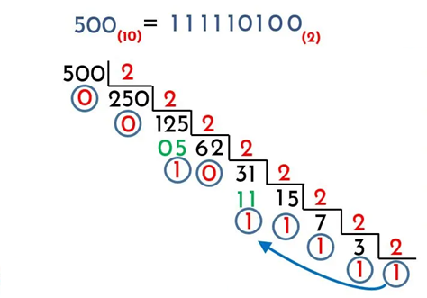
Tabla del 16
Para convertir un número binario a decimal, multiplicamos cada dígito binario por la potencia de dos correspondiente a su posición y sumamos los resultados.
Por ejemplo, para convertir el número binario 10110 (22) a decimal:
Para hacerlo de forma sencilla, nos hacemos una tabla.
En la parte superior ponemos los dígitos del número binario
Debajo, ponemos las potencias de 2
Multiplicamos dígitos por potencias. Es decir, quitamos los que sean 0 en binario
Sumamos
Binario
1
0
1
1
0
Potencia
16
8
4
2
1
Multiplicar
16
0
4
2
0
Finalmente, sumamos los números de la última fila = 16 + 0 + 4 + 2 + 0
Para llevar a cabo la conversión inversa, pasar de decimal a hexadecimal, podemos utilizar el método de la división sucesiva por 16.
Supongamos que queremos convertir el número 500 a sistema hexadecimal.
El sistema hexadecimal trabaja con base 16, por lo tanto vamos a dividir ese 500 entre 16.
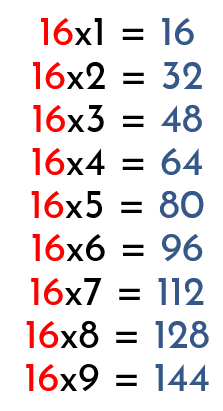
Tabla del 16
Dividimos 500 entre 16 y vemos que el nuevo cociente resulta 31. Ahora dividamos ese 31 entre 16 y así sucesivamente hasta que sea imposible seguir dividiendo.
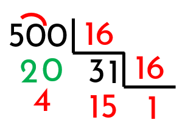
Divisiones
Para convertir decimal a hexadecimal debemos empezar desde el final recopilando todos los residuos de nuestra división como indica la flecha:
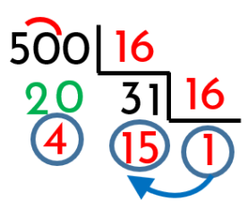
Agrupación resultado
Obtenemos 1 – 15 – 4. Vamos ahora a la tabla de relación entre decimal y hexadecimal y obtenemos la relación: 1 -F - 4
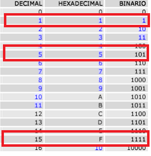
Equivalencia
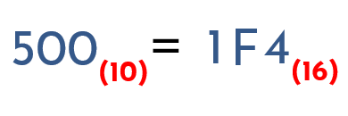
Resultado final
Para convertir un número hexadecimal a decimal, multiplicamos cada dígito binario por la potencia de 16 correspondiente a su posición y sumamos los resultados.
Por ejemplo, para convertir el número binario 15A a decimal:
Convierte los siguientes números decimales a binario:
a) 25
b) 78
c) 150
d) 5
e) 30
f) 148
g) 220
g) 192
i) 168
j) 255
Convierte los siguientes números binarios a decimal:
a) 110101
b) 1010110
c) 11110010
d) 101111
e) 101110
f) 101010
g) 111000
g) 10001110
i) 100001000
j) 1011101100110100
Convierte los siguientes números decimales a hexadecimal:
a) 45
b) 255
c) 1023
d) 55
e) 300
f) 118
g) 224
g) 168
i) 100
j) 250
Convierte los siguientes números hexadecimales a decimal:
a) 1F
b) A7
c) 3B2
d) F4
e) D3E
f) 11111
g) EBAC
h) B
i) 1C
j) 1FC
Convierte los siguientes números hexadecimales a binario:
a) 2C
b) F1
c) A23
d) 2394
e) D3E
f) 11111
g) EBAC
h) B
i) 1C
j) 1FC
Convierte los siguientes números binarios a hexadecimal:
a) 101110
b) 11110011
c) 1010100011
d) 1001111
e) 1101010110001
f) 100001
g) 100000000000111
h) 1010000110111100000
i) 0001
j) 1000
Explica qué es el sistema octal, cómo se hacen las transformaciones entre decimal, binario y octal, y realiza un ejemplo de conversión:
- Convierte el número decimal 95 a octal.
 Ordenadores¶
Ordenadores¶